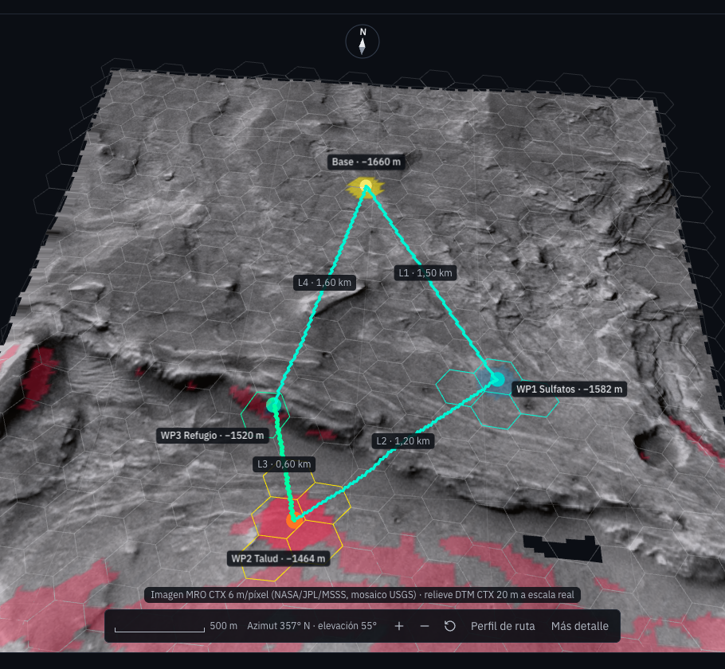
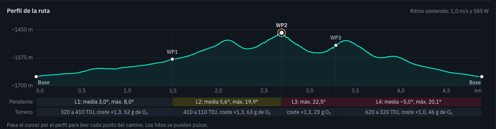
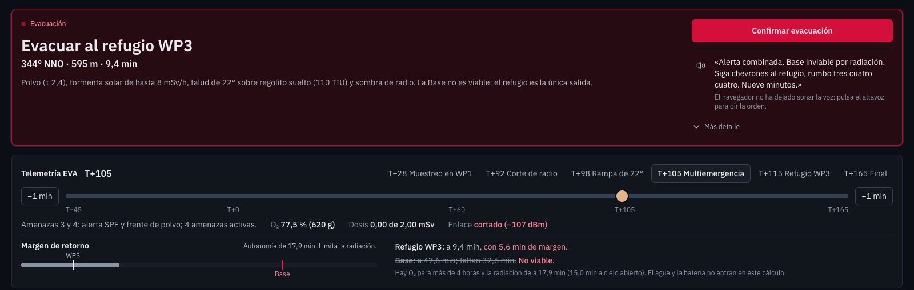

Reconnaissance, EVA & Dynamic-survival Atlas
A survival map for the first Marswalk in Melas Chasma, built from real NASA orbital data.
Team Red Project · Mario Perdiguero · Guillermo Remesal · David Pérez
| Mission / instrument | Used for |
|---|---|
| MRO CTX stereo DTM · 20 m | Elevation, slope, sky view, radio line of sight |
| MRO CTX mosaic · 6 m | Orbital texture of the 3D twin |
| MRO HiRISE · 0.25 m | Close-up visual context |
| MGS MOLA · HRSC+MOLA | Regional relief and horizon |
| Mars Odyssey THEMIS IR | Day / night thermal context |
| MSL RAD · MEDA · MCS | Radiation, dust and wind scenario |
Every value is labelled: measured, derived, or scenario assumption. Sources: USGS Astrogeology STAC, NASA PDS, JPL Mars Trek.



Code, data and docs: github.com/guillemo12/nasa-hackathon-red-project